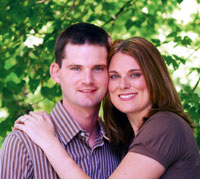

About the Bride

Amy was born and raised in Indianapolis, IN. She was uprooted from the Hoosier state and forced into Nebraska in 1994. She graduated from UNO in May 2004, and began working in the accounting department at Lozier Store Fixtures in Omaha. She graduated from Bellevue University in March of 2007. After spending the second half of her life thus far in Omaha, Amy moved to Iowa City, IA in April of 2007, and worked for 3 looooong months as the cost accountant at the Donaldson plant in Grinnell, IA. Amy is currently the cost accountant at Clipper Turbine Works plant in Cedar Rapids, IA.
Amy loves football season. Amy has married into Hawkeye football, and is excited to tailgate with Marc and friends. This fall ('07) was especially exciting because it was the first year we bought season tickets. But, Amy is really passionate about Notre Dame football, and not just because of the movie Rudy, although it is a bonus! Don’t mention the 1993 Boston College game, unless you want an earful. She has also been a Colts fan since they moved to Indy in 1984. She can remember who the quarterbacks were in years where they couldn’t give away enough tickets to fill the Hoosier Dome (now RCA Dome). And yes… the 2007 AFC Championship game was a dream come true… and a Super Bowl title wasn ’t too shabby either!
Amy’s brother is a CPA in Omaha, where Amy’s mom also lives. Her dad works in the travel industry out of his home office in Phoenix.